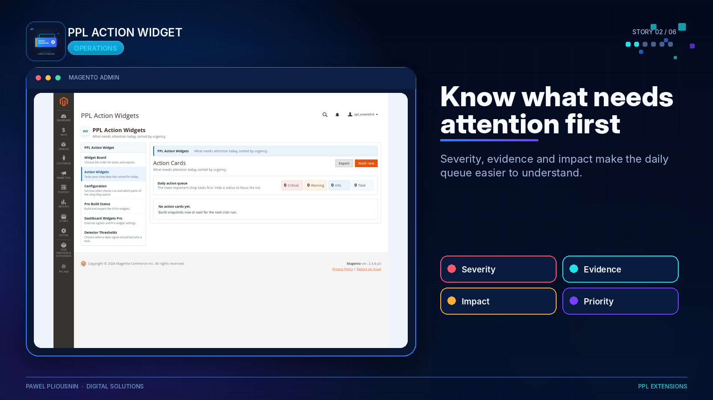
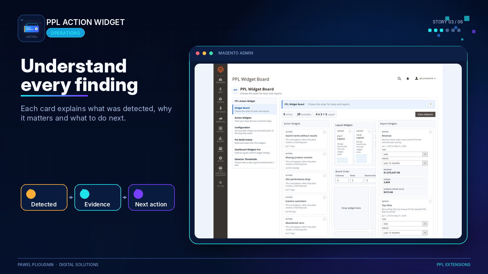
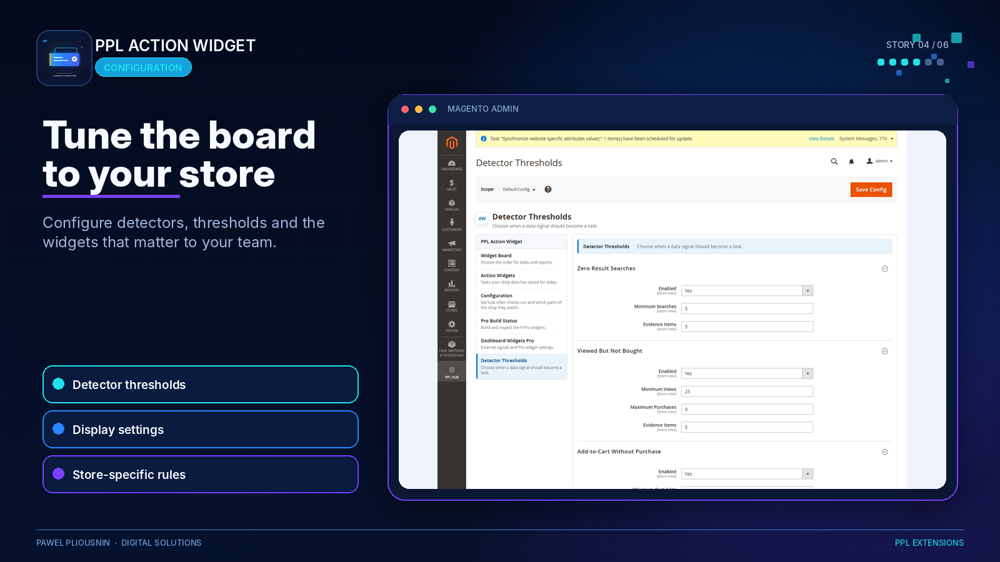
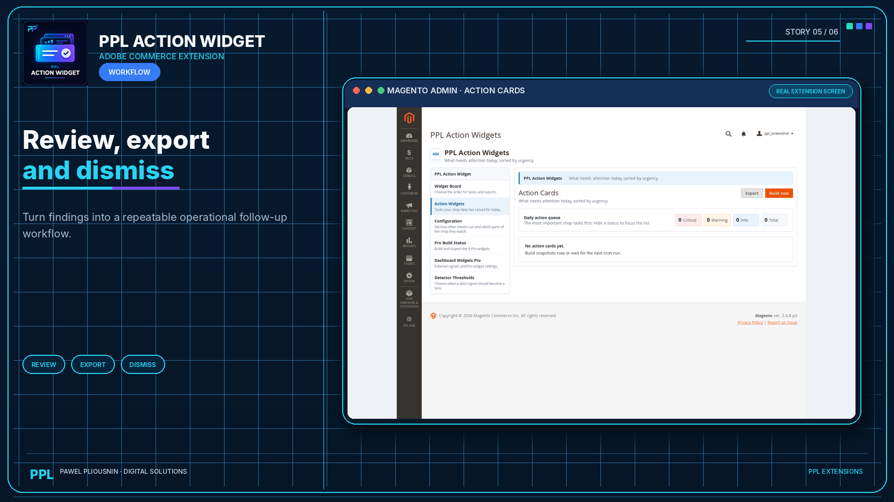

Prioritized cards
Cards say what was detected, how severe it is and what evidence supports it.
Turn Magento store and report signals into clear admin action cards that show what needs attention first. Each card includes severity, evidence, recommendation and follow-up actions.

Cards say what was detected, how severe it is and what evidence supports it.
Detector thresholds decide what is worth surfacing for the store instead of using one fixed rule.
Dismiss handled cards, export where supported and check board health so the action board remains useful.

PPL Report Core and installed report modules supply many of the signals that the board can surface.

Adjust detector behavior and dashboard display settings in admin.

Snapshots reduce heavy live dashboard queries and make the board more predictable.